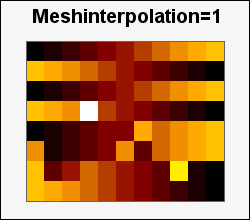
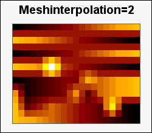
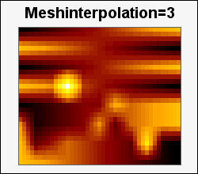
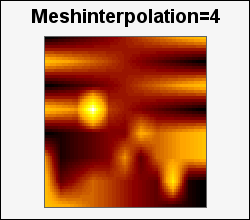
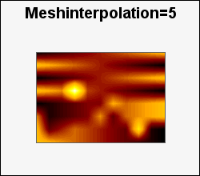

By using mesh interpolation it is possible to obtain a "smoother" looking matrix plot by creating a "in-between" values in the original matrix by linear interpolation.
This is also used in contour plots. See Understanding mesh interpolation for a more thorough discussion on mesh interpolation and the implication of CPU usage.
The interpolation factor specifies how many times, recursively, the interpolation should be done. Practical value ranges from 2-6. While it is possible to specify larger values than 6 the time it takes to do the interpolation will grow exponentially in the interpolation factor. It is also important to remember that this interpolation dos not create any "more" information than what is already available in the matrix. In addition it needs to be verified that such a linear interpolation of data is at all valid for the underlying data in the matrix.
As an example the following figures show the effect of doing a 1-5 times interpolation of the original data (same as interpolation = 1). With the chosen graph size it is no point of interpolating further since doing 5 times interpolating will force the module to be 1x1 pixel in order to fit within the constraints of the graph. (The original data was 8x11 and interpolating it 5 times creates a 113x161 matrix)
|  |  |  |
|  |  |
The different sizes of the plot is due to the fact that each cell in the matrix must have an integer number of pixels. In the graphs above we have used the largest module size while still fitting in the image. Hence the different appearances.
There are two ways of doing this interpolation.
When the matrix plot is created by specifying the interpolation factor as the second argument to the plot constructor, i.e.
1 | $matrixplot = new MatrixPlot($data,4); // 4 times interpolation |
If many plots share the same data it is more efficient to do it once in the beginning instead of doing the interpolation each time a new matrix plot object is created. This can be done by using the utility function
doMeshInterpolate(&$aData, $aFactor)
As can be seen from the declaration this is a call by reference method where the data is replaced by the new data that has been interpolated the specified number of times. This avoids unnecessary data copying for large matrices.
Those familiar with Matlab (tm) will recognize a similar mesh interpolation in
the interp2() function.